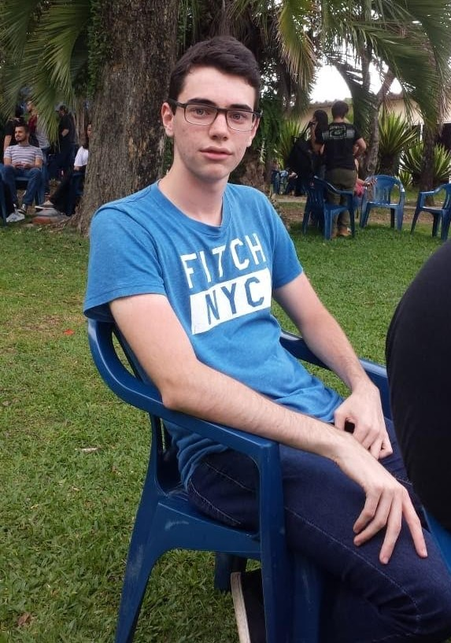

Sobre
Nascido em 29 de Setembro de 1998, natural de Curitiba, aonde mora até hoje, Matheus é apaixonado por muitas coisas: hambúrguer, cerveja, lanche, salgadinhos robson, LOL, Marilene, família, amigos, carnavrau, EJ, festinhas e viagens. Ele é a companhia perfeita para aqueles cafezinhos no meio da manhã ou tarde, o amigo louco mais responsável do role